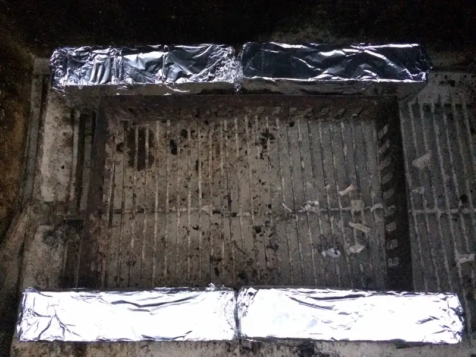
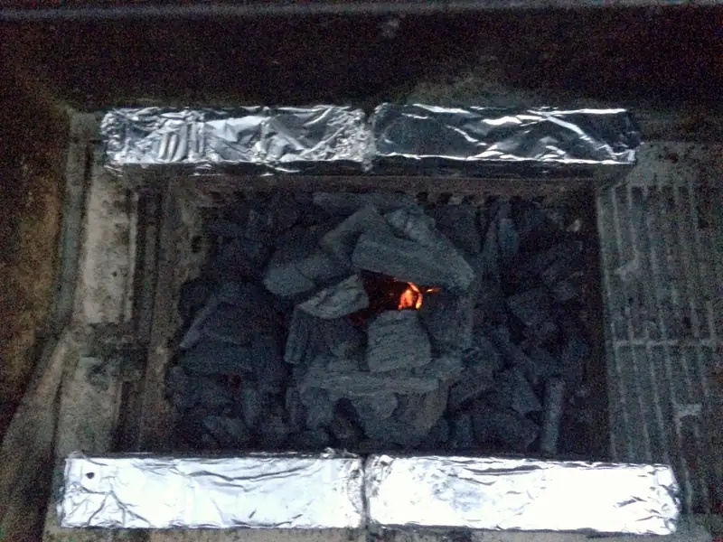
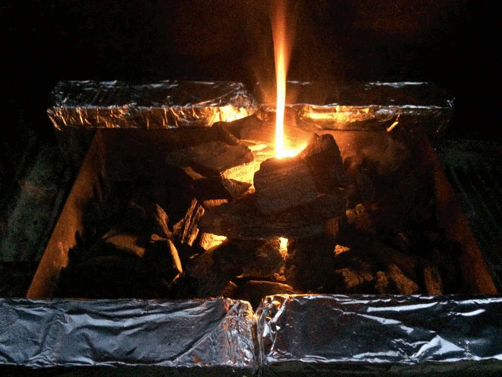
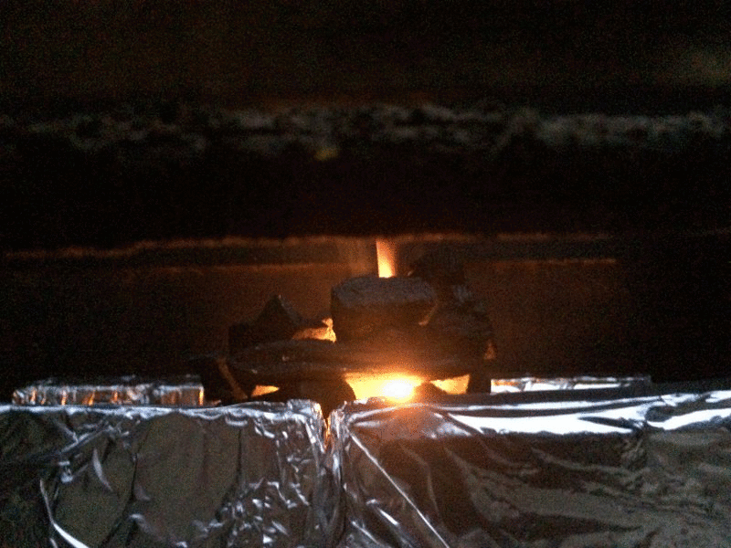
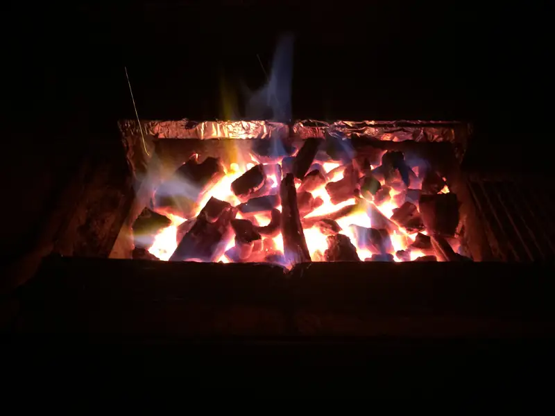
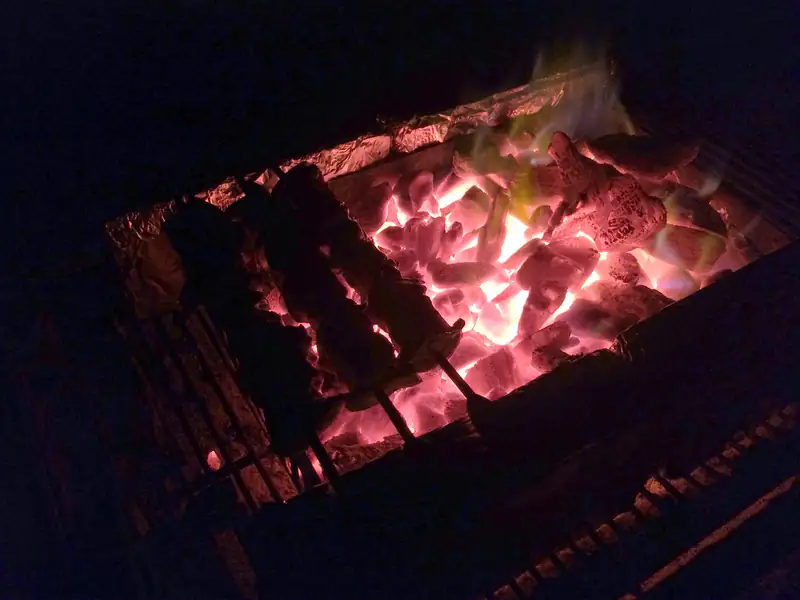

Yakitori ES
Yakitori (焼き鳥, やきとり, ヤキトリ) en su forma más básica son brochetas de pollo, aunque como buena tradición japonesa, hay variaciones según preferencia y según la región. Se pueden usar diferentes tipos de proteína y vegetales así como la elección entre sazonar con sal o con salsa tare, coloquialmente conocida como salsa teriyaki, al menos en Norteamérica.
En esta ocasión estaremos haciendo yakitori de pollo con pimiento, cebolla y salsa tare. En este post, además de la receta, o pseudo receta, estaremos concentrando nuestra atención a una parte mas importante que el pollo o la salsa: el fuego! y el respectivo acomodo para hacer las brochetas de forma un poco mas "tradicional".
Comencemos con acomodar el asador. Como son brochetas, dependerá de la longitud de las que tengas y de la cantidad que vayas a hacer, para 2 personas habría sido suficiente con un ladrillo de cada lado pero soy impaciente :). Los ladrillos van forrados en papel aluminio para que no se encochambren; estos se colocan a una distancia tal que se pueda poner una brocheta entre ellos y que quepa la comida sobre el fuego.

{kind=link}
Ahora coloca unos trozos de carbón en una torre cilíndrica, más o menos así: this

{kind=link}
Échale unas servilletas previamente humedecidas en aceite y enciéndelas. Normalmente con 2 o 3 son suficientes para que se mantenga solo el fuego, pero échale las que sean necesarias hasta que se mantenga.

{kind=link}
Un fuego feliz (no creo que Bob Ross lo haya dicho alguna vez)

{kind=link}
Flama azul!... Con carbón!

Ya que estén bien encendidos los carbones, desparrámalos en el fondo del asador. Admito que le calculé mal y le eche más carbón al desparramar y ... No, mala idea.. tuve que hacer a un lado al menos una parte para evitar que se me quemara el pollo!

{kind=link}
Si, digamos que lo configuré como "lado caliente" lado .. "menos caliente"

{kind=link}
Producto terminado, poquito quemado el azúcar de la salsa.
{kind=link}
Sobre arroz integral :D

Fuentes
1. http://www.bonappetit.com/columns/obsessivore-columns/article/i-m-big-on-japan
2. Yakitori
3. http://www.japan-guide.com/r/e102.html